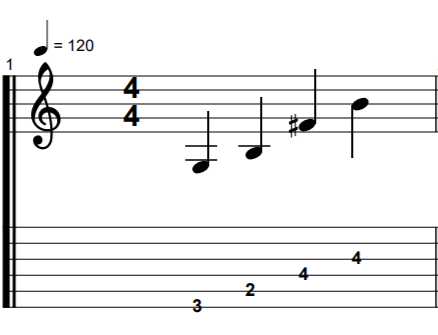
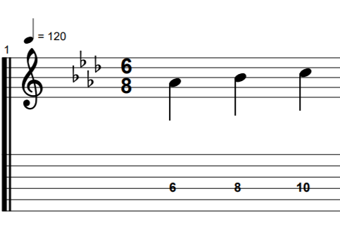

GROWL
I'd rather be playing guitar
 EN
EN
The intervalic content of inverted chords makes them harder to quickly find on the guitar. Rather than looking for 3rds (as most chords contain) we have to accomodate 2nds, 4ths and 5ths too.
I wrote a couple of exercises aimed at targetting the intervals found in these chords and then systematically playing them within a framework. This was very important for me as I just find these chords so hard to locate. There is a reason, and it is worth noting. I have mentioned before my bottom up fixation on the guitar. This comes from learning powerchords first. Nothing wrong with that, but as your playing expands you need to start locating things on higher strings. That's why my exercises here focus on chords with a D string root.
EXERCISE ONE: Interval quality practice This exercises hits the thirds and sevenths of chords. As you play, be aware of the intervals formed when the interval inverts, i.e. when the third comes above the seventh. In most cases we have a fifth between 3 and 7 but a 4th between 7 and 3. Also, be mindful of the ways that playing these intervals changes as you hit the awkward B string.
EXERCISE TWO: Inverty Dance This exercise is a sequence of arpeggios built first from a diatonic chord and then from an inverted tonic chord with the same root. For example, we have the e minor arpeggio, followed by the first inversion tonic C chord. Both start from the same root e note. The intention is that doing so gives us a reference point when constructing the inverted chord on the fretboard. To make things more musical this time I have included some rhythm variation and non chord tones. Hopefully the result is something that is more interesting to play than straight arpeggios.
Here is the exercise file. Learn the progression, add it to your exercise routine!
